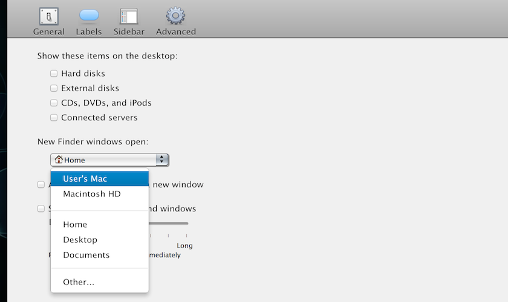
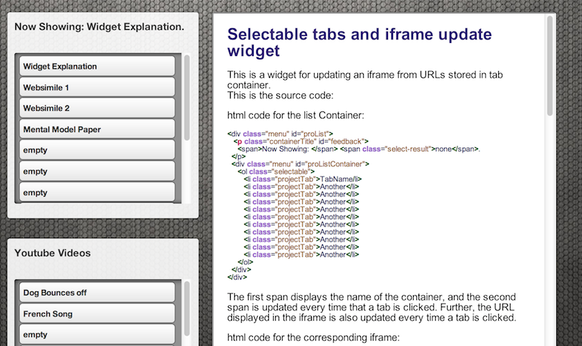
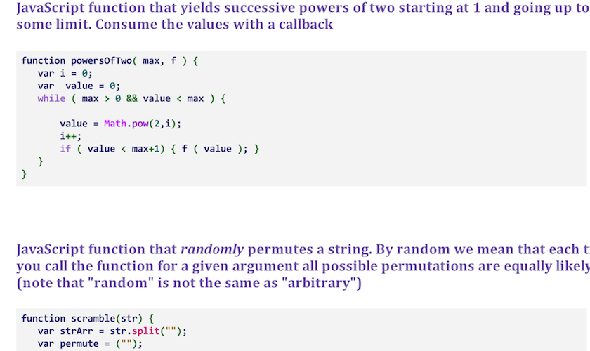
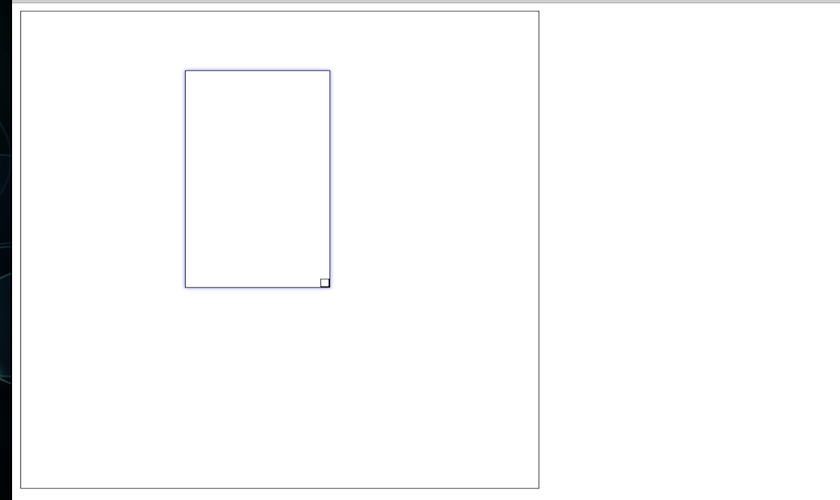
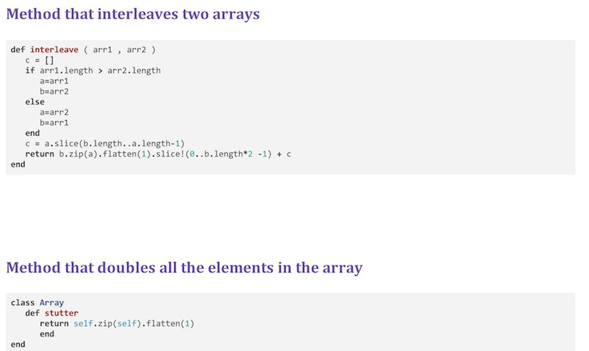

-

Facimiles Project (1)
The project consisten on resmebling sufficiently complex, self-contained user interface display each from a native desktop application (e.g., on Windows, OS X, Linux) and a native “other” application (e.g., on Android, iOS, PS3, Xbox 360), for a total of two (2) displays, and code up the closest possible facsimiles of them that you can manage in HTML/CSS. Further, the use of prebuilt CSS libraries, such as Twitter Bootstrap, was permitted.
-

User Interface Widget
This project consisted on designing and implementing a reusable widget for use in web browsers. The point was to see how low-level event handling (e.g., mouse or keyboard activity) translates into higher-level ones (e.g., selection or change events).
-

Clojure Library
Library that contains several simple clojure methods. The exercises designed for this library were created to understand the basic functional programming, concurrency, and immutability.
-

Direct Manipulation Exercise
Application that resembles the implemebtation of a direct manipulation simple application. Modify the modification of the given code from the class consisted on writing the code for the application to support resizing and deletion (by dragging a box outside of the designated drawing area). This project delaled with traditional mouse-driven rubberbanding and drag-and-dropfor creating, deleting.
-
Facimiles Project (2)
The project consisten on resmebling sufficiently complex, self-contained user interface display each from a native desktop application (e.g., on Windows, OS X, Linux) and a native “other” application (e.g., on Android, iOS, PS3, Xbox 360), for a total of two (2) displays, and code up the closest possible facsimiles of them that you can manage in HTML/CSS. Further, the use of prebuilt CSS libraries, such as Twitter Bootstrap, was permitted.
-

Ruby Library
Library that contains several simple ruby methods. The exercises designed for this library were created to understadn the use of ruby as scripting language. Further, this set of methdos porvide an inside of functional and imperative programming that ruby allows.
-
Personal Resume